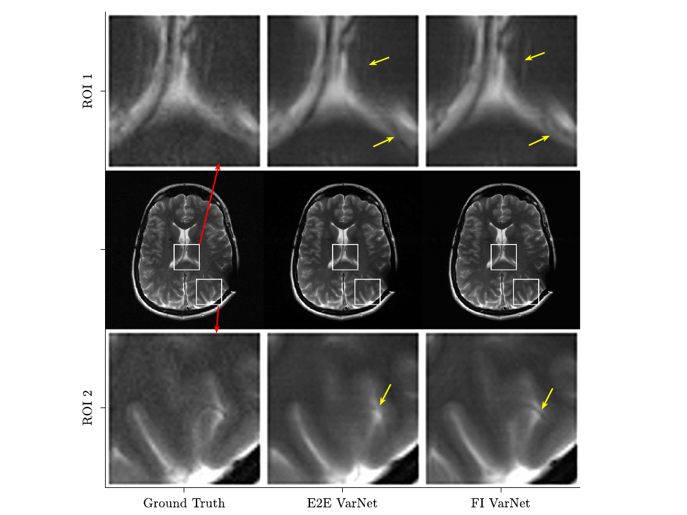

{kind=link}

Accelerated MRI Reconstructions via Variational Network and Feature Domain Learning
This work introduces three architecture modifications to enhance the performance of the end-to-end (E2E) variational network (VarNet) for undersampled MRI reconstructions. We first implemented Feature VarNet which propagates information throughout the cascades of the network in an N-channel feature-space instead of a 2-channel feature-space. Then we included a custom attention layer that utilizes the spatial locations of Cartesian undersampling artifacts to further improve performance. Lastly, we combined the Feature and E2E VarNets into the Feature-Image (FI) VarNet, to facilitate cross-domain learning and boost accuracy. FI VarNet secured second place in the public fastMRI leaderboard for 4x Cartesian undersampling, outperforming all open-source models in the leaderboard. The proposed FI VarNet enhances the reconstruction quality of undersampled MRI and could enable clinically acceptable reconstructions at higher acceleration factors than currently possible.
Read the paper{kind=link}